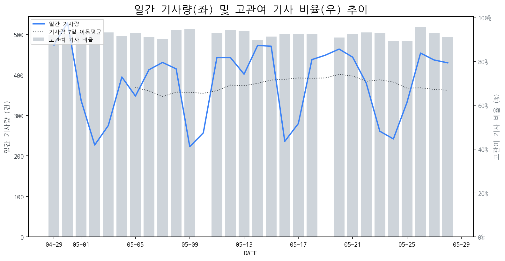

1
시장 활동 지표
기사량 추세 & 이상 징후 탐지
시장의 '전체 기사량'이 평소보다 비정상적으로 급증했는지(Spike)를 차트로 확인하고, LLM이 분석한 급등의 핵심 원인을 파악할 수 있음

고관여 기사란? 산업 연관 키워드로 수집된 기사들 중 디스플레이 키워드에 가중치를 반영하여 도출된 관련성 높은 기사
수집된 기사 수 (2026-05-28)
430
-3% WoW
기사량 변동 수준 (7일 이동평균 대비)
±6.7% 이하
2
오늘의 키워드
급격한 관심 ↑, 주목해야 할 키워드
1
oled
+6.2σ
삼성디스플레이의 고성능 QD-OLED 모니터 기술 개발 발표가 시장의 주목을 받았습니다.
Related Metrics
금일 언급량: 44, 전일 대비: +40
Interpretation
프리미엄 모니터 시장 확대 기대
Next Step
핵심 토픽 'OLED_Topic' 관련 신호입니다. 3번 섹션(키워드 감성분석)에서 해당 토픽의 감성 변동을 교차 확인하세요.
2
4k
+5.4σ
삼성디스플레이의 4K 360Hz QD-OLED 모니터용 패널 개발 발표가 핵심 요인입니다.
Related Metrics
금일 언급량: 17, 전일 대비: +17
Interpretation
고성능 디스플레이 시장 경쟁 심화
Next Step
'4k' 관련 상세 기사 및 경쟁사 반응 모니터링
3
모니터
+5.3σ
삼성디스플레이의 고성능 QD-OLED 모니터 개발 소식이 시장의 큰 관심을 끌고 있습니다.
Related Metrics
금일 언급량: 23, 전일 대비: +23
Interpretation
OLED 모니터 시장 성장 기대
Next Step
'모니터' 관련 상세 기사 및 경쟁사 반응 모니터링
4
lg디스플레이
+4.3σ
LG디스플레이가 세계 최초 240Hz RGB 스트라이프 OLED 양산 성공 소식이 급등의 핵심 원인입니다.
Related Metrics
금일 언급량: 16, 전일 대비: +11
Interpretation
기술 초격차 확보.
Next Step
'lg디스플레이' 관련 상세 기사 및 경쟁사 반응 모니터링
3
실시간 Risk 키워드
경계해야 할 시그널 탐지
특정 토픽의 부정 감성 점수가 급등할 때 이를 즉시 탐지하고, "근거 기사" 링크를 통해 리스크의 실체를 빠르게 파악할 수 있음
키워드 분석 결과, 오늘은 걱정할 만한 하락 신호가 없습니다. (부정 언급량 변화: +1.5σ 이내)
4
주요 이벤트 모니터링
실시간 산업 동향 파악을 위한 주요 활동
최근 발생한 주요 기업들의 신제품 출시, 투자 등 주요 이벤트를 제공하여 매일 경쟁사 동향을 확인할 수 있음
삼성디스플레이와 LG디스플레이가 OLED 모니터 라인업을 강화하며 프리미엄 시장을 집중 공략한다. 이는 고성능 디스플레이 수요 증가에 대응하고 시장 점유율 확대를 위한 전략으로 풀이된다.
Impact
OLED 모니터 시장의 경쟁 심화와 함께 프리미엄 모니터 시장 전반의 기술 발전 및 가격 경쟁을 촉진할 것으로 예상된다.
Next Step
경쟁사 동향을 면밀히 분석하고, 차별화된 기술력과 가격 경쟁력을 확보하여 시장 우위를 유지하기 위한 전략을 수립해야 한다.
2026년 하반기 디스플레이 시장은 소부장 경쟁력 강화와 장기 계약 및 고부가가치 제품(OL) 중심으로 생존 전략을 모색할 것으로 예상됩니다. 이는 불확실한 시장 환경 속에서 안정적인 수익 확보와 기술 우위를 달성하기 위한 움직임입니다.
Impact
이러한 전략은 디스플레이 제조사들의 원가 경쟁력 강화, 공급망 안정화, 그리고 차별화된 기술력을 통해 시장 지배력을 유지하거나 확대하는 데 기여할 수 있습니다.
Next Step
디스플레이 제조 기업은 핵심 소부장 기술 내재화 또는 전략적 파트너십 강화, 고객사와 장기적이고 안정적인 공급 계약 체결, 그리고 고부가가치 올레드(OLED) 등 차세대 디스플레이 기술 개발 및 양산 역량 확보에 집중해야 합니다.
과거 통신 장비와 기술 중심이었던 MWC가 올해부터 AI 기술과 솔루션을 주요 테마로 삼고 있습니다. 이는 AI가 전시회의 핵심 동력으로 부상했음을 시사합니다.
Impact
AI 기술의 전방위적인 확산으로 인해 디스플레이 시장에서는 AI 기능을 강화하거나 AI 기반의 새로운 디스플레이 경험을 제공하는 제품에 대한 수요가 증가할 것으로 예상됩니다.
Next Step
AI 기술과의 융합을 통해 디스플레이의 지능화 및 개인화 기능을 강화하고, AI 기반 스마트 디스플레이 솔루션 개발에 대한 투자를 고려해야 합니다.
K콘텐츠가 첨단 기술과의 융합을 통해 글로벌 시장에서의 영향력을 확대하고 있습니다. 이는 새로운 기술 투자 및 디스플레이 수요 증가를 견인할 것으로 예상됩니다.
Impact
K콘텐츠의 성장은 고품질 디스플레이, 특히 몰입감과 시각적 경험을 극대화하는 첨단 디스플레이 기술에 대한 수요를 증대시킬 것입니다.
Next Step
디스플레이 제조 기업은 K콘텐츠 소비에 최적화된 고해상도, 고주사율, HDR 등 프리미엄 디스플레이 기술 개발 및 마케팅에 집중해야 합니다.
LG전자가 새로운 이페이퍼 디스플레이를 공개했으며, 동시에 삼성은 강남과 홍대에서 오디세이 게이밍 모니터 팝업 스토어를 운영한다. 이는 두 기업이 각기 다른 디스플레이 기술 및 제품 라인업을 통해 시장을 공략하고 있음을 보여준다.
Impact
LG전자의 이페이퍼 디스플레이 출시는 저전력 및 차별화된 사용자 경험을 제공하는 새로운 시장 개척 가능성을 열며, 삼성 오디세이의 팝업 스토어 운영은 게이밍 디스플레이 시장의 경쟁 심화를 예고한다.
Next Step
디스플레이 제조 기업은 LG의 이페이퍼 기술 잠재력과 삼성의 게이밍 시장 공략을 주시하며, 자사의 핵심 역량을 강화하고 차별화된 제품 및 마케팅 전략 수립에 집중해야 한다.